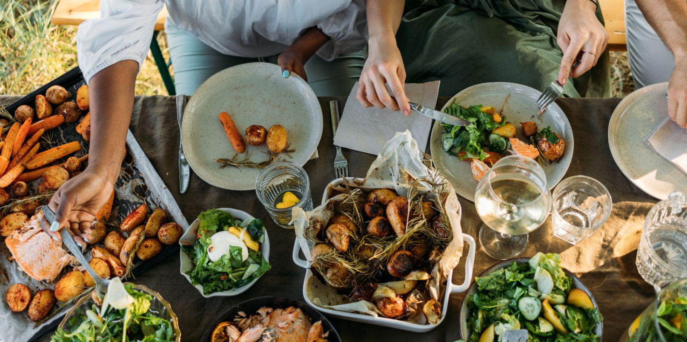

Concursantes
En esta sección se describen las recetas de los mejores concursantes

Las recetas
Estas son las recetas de los mejores concursantes
Pasta de mariscos Cajun
John Cooper
“Esta receta de pasta de mariscos Cajun es picante, pero muy buena!”
Salmón de tabla de cedro
Marta Alonso
“El salmón alcanza su total potencial cuando es asado encima de una tabla de cedro”
Pollo al vinagre
Mary Ann Stones
“Pollo irresistible, cocinado con vinagre”